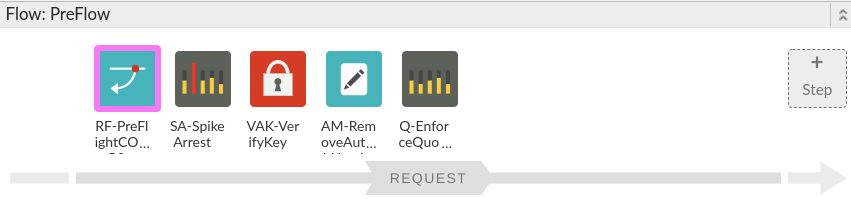
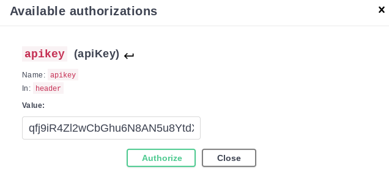
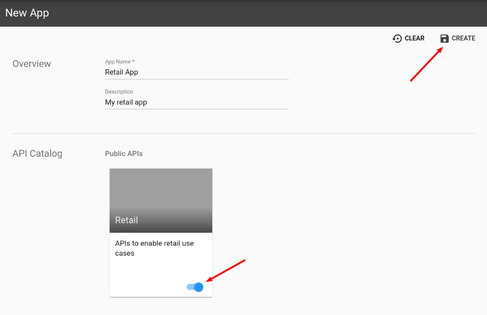

Apigee offers the ability for developers to learn about your API via the documentation in the developer portal in a way that the API can actually be executed from the documentation. This simplifies the learning process for any developers wanting to adopt your API.
What you'll learn
- CORS headers
- How to publish APIs as products on a portal
- How to prepare an API to be executed from within the documentation
What you'll need
- Your proxy created in the previous lab
Use case
You want developers to easily find out about your APIs and how to use them..
Download a working solution to the previous lab as a proxy bundle ZIP file:
Prerequisites:
- Target Server: TS-Retail (instructions in lab 2)
- Product, Developer and App (instructions in lab 3)
- Key Value Map: ProductsKVM (instructions in lab 6)
- Shared Flow: BackendCredentials (instructions in lab 9)
- Cache: ProductsCache (instructions in lab 12)
Find your spec ID. When you open your spec in the spec editor, the link will be in this format, with the spec ID at the end of the URL:
https://apigee.com/organizations/YOURORG/specs/folder/FOLDERID/editor/YOURSPECID
Navigate to your proxy and upload the bundle as a new revision:

Select the association.json resource. Replace YOURORG and YOURSPECID with the values from the spec URL.

Once updated, the association.json should look something like this:
{
"url": "/organizations/apigeek-eval/specs/doc/207966/content"
}
Click Save to save your proxy. Open the Deployment menu, and check the deployment status. Click on test to deploy this revision of the proxy.

Test will be green when it is deployed.

- Add CORS headers to the existing API
- Create a new Developer Portal
- Publish the API to the portal
- Invoke the API from the documentation
CORS (cross-origin resource sharing) are headers placed in the API response that will tell a client (a browser in this case) whether they should load the response or not, when that data is coming from a different origin or domain. For example, an application running on a browser on app.example.com, will not be able to run an API on domains like app2.example.com or app.example.net, unless the response from the API authorizes the browser to display the data.
CORS headers are necessary in our lab because our API runs under a *.apigee.net domain, while the portal is on *.apigee.io, and, the UI in *.apigee.com.
In order to properly invoke the API from the documentation, in all possible scenarios, we'll need to add CORS headers to all of our API responses, for the positive scenarios (response flow) as well as for the error handling cases (fault rules). There's also the case of a preflight request, in which the browser sends in a request with an OPTIONS verb to learn, beforehand, if the operation that it'll attempt next is even possible.
To learn more about CORS, see the Apigee CORS docs.
Add preflight handling
Our first step will be to handle the preflight that the browser will send in.
In our proxy, in the PreFlow, let's add a RaiseFault policy named:
RF-PreFlightCORS
Use the following configuration:
<RaiseFault async="false" continueOnError="false" enabled="true" name="RF-PreFlightCORS">
<FaultResponse>
<Set>
<Headers>
<Header name="Access-Control-Allow-Origin">{request.header.Origin}</Header>
<Header name="Access-Control-Allow-Headers">apikey, content-type, origin, x-requested-with, accept</Header>
<Header name="Access-Control-Max-Age">600</Header>
<Header name="Access-Control-Allow-Methods">GET, PATCH, PUT, POST, DELETE</Header>
</Headers>
<Payload/>
<StatusCode>200</StatusCode>
<ReasonPhrase>OK</ReasonPhrase>
</Set>
</FaultResponse>
<IgnoreUnresolvedVariables>true</IgnoreUnresolvedVariables>
</RaiseFault>This policy must run before the Verify API Key policy:

We'll also need to add a condition for this policy to only execute if the incoming verb is OPTIONS and the incoming Origin header exists:
<PreFlow name="PreFlow">
<Request>
<Step>
<Condition>request.verb == "OPTIONS" AND request.header.Origin != null</Condition>
<Name>RF-PreFlightCORS</Name>
</Step>
...Add CORS to the Response Flow
The next step will be to add a policy to attach the same CORS headers for all success responses the API sends back.
Given that this is information that the client needs, we'll add this policy to the Response in the PostFlow of the Proxy Endpoint. That ensure it'll execute as close to the client as possible.
Choose an AssignMessage policy, and use the name:
AM-SetCORSHeaders
Configuration:
<AssignMessage async="false" continueOnError="false" enabled="true" name="AM-SetCORSHeaders">
<Set>
<Headers>
<Header name="Access-Control-Allow-Origin">{request.header.Origin}</Header>
<Header name="Access-Control-Allow-Headers">apikey, content-type, origin, x-requested-with, accept</Header>
<Header name="Access-Control-Max-Age">600</Header>
<Header name="Access-Control-Allow-Methods">GET, PATCH, PUT, POST, DELETE</Header>
</Headers>
</Set>
<IgnoreUnresolvedVariables>true</IgnoreUnresolvedVariables>
<AssignTo createNew="false" transport="http" type="response"/>
</AssignMessage>The flow should then look like:
We'll also need to add a condition for this policy to only execute if the incoming Origin header exists:
<Step>
<Condition>request.header.Origin != null</Condition>
<Name>AM-SetCORSHeaders</Name>
</Step>Add CORS to the error handling cases
Our final configuration will be to use the same policy as above for the error responses.
For that we'll be creating a DefaultFaultRule entry above the FaultRules section in the ProxyEndpoint, and adding a reference to the same policy:
<ProxyEndpoint name="default">
<Description/>
<DefaultFaultRule>
<Step>
<Condition>request.header.Origin != null</Condition>
<Name>AM-SetCORSHeaders</Name>
</Step>
</DefaultFaultRule>
<FaultRules>
<FaultRule name="JSONThreat">
...If a fault is raised during the TargetEndpoint processing, the TargetEndpoint FaultRules will be used. Therefore, we should also add the DefaultFaultRule to the TargetEndpoint, above the empty FaultRules section:
<TargetEndpoint name="default">
<Description/>
<DefaultFaultRule>
<Step>
<Condition>request.header.Origin != null</Condition>
<Name>AM-SetCORSHeaders</Name>
</Step>
</DefaultFaultRule>
<FaultRules/>
...Save the proxy. You can test your API in different scenarios and validate that you see the headers in trace being sent back to the client.
OPTIONS preflight:
Normal GET with Origin:
With our proxy ready, the next step is to create a portal, so we can publish the documentation and APIs to it.
Go to Publish, and click on Portals
Next, click on +Portal on the top right corner or "Get started" in the middle of the page:
Just enter a name for your portal (retail) and click on Create.
You should then see something like this to customize your portal:
To see your portal online, click on ‘Live Portal' at the top right corner:
This will bring up your brand new portal with its default configuration for colors and branding:
If you click on APIs, it should bring you to another page with an error message:
We'll be adding our API to it next.
Configure the frontend spec for our API
Back in the UI, go to Develop, Specs.
The retail-v1 spec we have is already a spec for our frontend, but it doesn't include our use of API keys to protect against unauthorized usage. We will edit our current spec, but if the changes don't work, we'll also have an option to upload a new frontend spec to use instead.
Edit the existing spec
Click on the retail-v1 spec. We'll need to remove the Basic Authentication that was used for the product update (PATCH /products/{id}), and add API key support for all calls.
For OpenAPI v3 spec security, defining security has two parts: the definition of the security type, and configuring which resources should use that security.
It might be a good idea to copy the entire spec into a text editor, so you can start from the beginning if you have problems while editing. YAML (the format of the spec) requires specific spacing and indentation to work. If you make a mistake, the editor may point it out to you. Each indentation level is two spaces. Tabs are not allowed. The boxes below showing the changes to be made should have the right spacing if you copy entire lines.
First, let's change the security definition from basic authentication to API key. You should find the securitySchemes section starting on line 316, if you only modified and didn't add or remove any lines. The securitySchemes section currently looks like this:
securitySchemes:
basicAuth:
type: http
description: basic auth
scheme: basic
The section describes a scheme labeled "basicAuth" that uses the basic authentication scheme. We will no longer need this (we don't pass in credentials other than the API key). We will replace the basicAuth scheme with an API key scheme:
securitySchemes:
apikey:
type: apiKey
in: header
name: apikey
The in and name fields indicate that the API key is found in a header named apikey. Remember that the indentation for all lines is important.
Next, we'll remove the security defined for the update product resource. It should be found at line 224, and looks like this:
security:
- basicAuth: []
Remove these two lines.
Last, let's add API key validation for all resources. We'll insert this security specification at the top level, which will cause the apikey security scheme to be applied to all resources. It should be inserted just after the tags section and just before the paths section.
security: - apikey: []
When inserted, it should look like this:
Test the Spec
On the right side of the screen, you should see the rendering of the documentation. Click the Authorize button:
For APIKey, enter the key from your Application in the ‘Value' box and click on Authorize:

Click on Close.
Scroll down a little in the documentation and click on ‘Try it out' for GET /categories:
This will now show you the ‘Execute' button. Click on it:
You should then see the response from the server displayed in the documentation:
If that is not what you see, retrace the previous steps back.
If you see the following, your CORS headers are misconfigured:
Import a new frontend spec (ONLY if editing existing spec failed)
Create a new spec by clicking on +Spec and then selecting Import URL:
Enter the name and URL to be used for the specification.
Import Name:
retail-frontend
Import URL:
https://raw.githubusercontent.com/apigeekdemos/api-eng-training-resources/master/resources/specs/retail-frontend.yaml
Find YOURORG in the servers section (line 14) and replace it with your org name, and then save the spec.
Link the Spec to the API
Back in Publish/Portals, select your portal and click on APIs:
This is where we'll associate the documentation with an API product.
Click on + API
In the new popup, select your product, and click on Next:
Now we need to link it to the specification that will serve as the documentation for our API:
Click on ‘Choose a different spec...'
Then, go to ‘My Specs' and select your frontend spec (retail-v1 if you successfully updated your spec, retail-frontend if you had to upload a new one) and click on Select:
Click on Next and update any information as needed:
Click on Finish.
Back in the live portal, if you refresh the page you should now see a tile for the newly linked API in the portal:
And, if you click on it, it'll take you to the API documentation, now live in the portal:
You should also Authorize and test the APIs from here.
Click Authorize and then OK.
Click on GET /categories, and Execute to try it out:
Create a new developer account from the portal
At the top, right corner in the portal, click on ‘Sign In'
This will bring up the login page for the portal, from where you can also create an account.
Click on ‘Create account' and enter the information required.
The email needs to be a valid email in order for you to validate the account before being able to use it.
After you click on the ‘Create Account' button, wait a few minutes and check your email inbox for an email with the subject "Verify your new account"
Click on the link in the email, which should take you back to the portal.
You can now click on ‘Sign In' and enter your credentials and click on the ‘Sign In' button.
After you are logged in, you should see a new drop down option at the top of the page, with the email address:
As you click on the drop down menu, you should now see 2 options:
- Apps
- Sign Out
Click Apps. This is where you'll find all the apps that a developer may have already created, or in this case for a brand new account, the list should be empty.
Create a new application from the portal
At the top, right corner in the portal, click on ‘+ New App
Enter the details for your app. Make sure to flip the switch on the Retail API at the bottom to enable the Create button, and when done, click on Create:

And this will bring you to the details of you new App, created from the portal.
This is how users of your API can self register to get an API key to call the retail-v1 API.
You now know how to publish your API documentation to a developer portal.